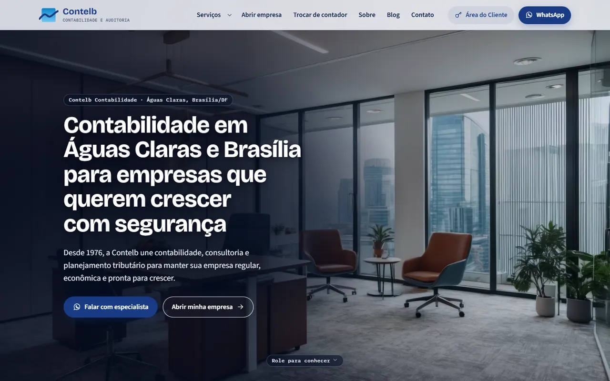
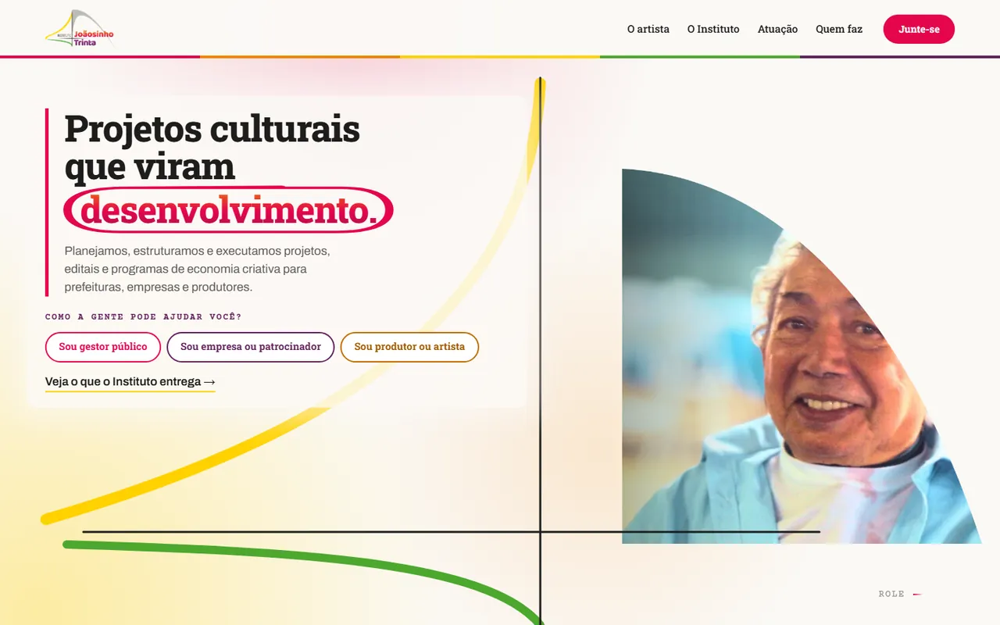

Interface boa resolve o problema de alguém. Eu gosto de medir se resolveu.
Sou de Brasília e curso Ciência da Computação na UDF. No dia a dia trabalho com React e TypeScript, HTML, CSS e JavaScript, integro interfaces a APIs REST e escrevo automações em Python quando uma tarefa se repete demais.
Na Contelb, escritório de contabilidade em Brasília, meu trabalho parte da rotina do departamento contábil. Idealizei um programa para Windows que lê extratos de mais de 15 bancos, gera planilhas Excel conferidas e apoia a conciliação no sistema Domínio. Na troca de sistema do escritório, automatizei em Python a migração dos balancetes. Também projetei o site e o blog novos, pensados para quem procura contabilidade na cidade.
Na Index Participações, desenvolvi o site do Instituto Joãosinho Trinta: cinco páginas com uma narrativa que acompanha a rolagem. Para a página continuar leve em computadores simples, comprimi imagens, usei content-visibility e criei um modo de desempenho adaptativo. A animação foi de cerca de 28 para 60 quadros por segundo em hardware simulado de baixo desempenho.
Nas duas empresas, cada site ou programa nasceu de uma necessidade concreta: um escritório que precisava ser encontrado por clientes da cidade, uma equipe que precisava conciliar extratos de muitos bancos, um instituto que queria contar sua história sem deixar o site pesado.
Python, Node.js, PHP, FastAPI, Flask, PostgreSQL, MySQL
Projetos
Primeiro, o que está em uso real.
Sites publicados e automações que rodam na rotina de uma empresa vêm antes. Depois, os projetos de portfólio, todos com código aberto. Cada caso mostra o problema, o que eu fiz e o resultado.
contelb.com.br

01PublicadoContelb Contabilidade · 2026
Contelb Contabilidade: site e blog
Site institucional e blog de um escritório contábil de Brasília, com foco em SEO local e painel próprio para publicar artigos.
Problema
O escritório precisava de um site que aparecesse nas buscas locais e de um blog que a própria equipe pudesse atualizar.
O que fiz
Projetei e desenvolvi o site e o blog: páginas por serviço, dados estruturados, sitemap e redirecionamento das URLs antigas. Criei o painel de administração do blog em PHP, com login protegido.
Resultado
Site e blog publicados na KingHost. A equipe cria, edita e publica artigos pelo painel, sem mexer no código.
LeituraTexto extraído, com OCR quando o PDF é imagem
SaídaPlanilha Excel conferida
UsoConciliação no sistema Domínio
Migração de balancetes
EntradaBalancetes do sistema antigo
PythonConversão e conferência
SaídaArquivo TXT importável no sistema novo
Ilustração genérica do fluxo. Dados de clientes, arquivos financeiros e código interno não são publicados.
02Uso internoContelb · 2026
Automações contábeis da Contelb
Duas ferramentas em produção no departamento contábil. Mostro como funcionam, sem expor dados nem código da empresa.
Conversor de extratos
Problema
Cada banco entrega o extrato em um formato, e todos precisam virar planilha para a conciliação bancária no sistema Domínio.
O que fiz
Idealizei e conduzi o desenvolvimento de um programa para Windows que lê extratos de mais de 15 bancos, inclusive PDFs escaneados (com OCR), PDFs com senha e arquivos OFX. Ele tem instalador e atualização automática pela rede da empresa.
Resultado
Planilhas Excel conferidas, prontas para apoiar a conciliação no Domínio.
Migração de balancetes
Problema
Na troca de sistema contábil, os balancetes precisavam entrar no sistema novo.
O que fiz
Escrevi uma automação em Python que converte os balancetes no arquivo TXT que o sistema novo importa.
Resultado
Automação usada em produção durante a migração de sistema.
Python
OCR
OFX
Excel
Ferramentas internas: sem link público.
site-joaosinho-trinta-ubf5.vercel.app

03PortfólioProjeto profissional · Index Participações
Instituto Joãosinho Trinta
Site institucional de cinco páginas em HTML, CSS e JavaScript puro, com narrativa guiada pela rolagem.
Problema
O instituto queria apresentar sua história e sua atuação com uma narrativa visual, sem deixar o site pesado em computadores mais simples.
O que fiz
Desenvolvi as cinco páginas com narrativa guiada pela rolagem, navegação por teclado e suporte à preferência por movimento reduzido. Otimizei com compressão de imagens, content-visibility e um modo de desempenho adaptativo.
Resultado
Carregamento de 25% a 45% mais leve e taxa de quadros de cerca de 28 para 60 fps em hardware simulado de baixo desempenho. Entrega contínua na Vercel, com prévia a cada pull request.
Sistema de gestão de amostras laboratoriais, com dashboard, gráficos e o histórico de cada amostra.
Problema
Com dados espalhados em planilhas, um laboratório de controle de qualidade tem dificuldade para saber em que etapa está cada amostra e quem alterou cada resultado.
O que fiz
Construí a interface em React e TypeScript, com React Router, TanStack Query e Recharts, consumindo uma API REST de 55 operações com autenticação JWT e controle de acesso por perfil.
Resultado
Dashboard com gráficos acessíveis e linha do tempo de cada amostra, coberto por 94 testes de interface (Vitest e Testing Library) e integração contínua no GitHub Actions.
Site de uma página para uma oficina especializada em Volkswagen e Audi em Brasília, com uma animação guiada pela rolagem.
Problema
A oficina queria aparecer nas buscas locais e receber pedidos de orçamento pelo WhatsApp.
O que fiz
Criei a página em HTML, CSS e JavaScript puro, sem framework nem build. No topo, um câmbio DSG desenhado em traço técnico se desmonta conforme a rolagem até destacar a peça com defeito. Abaixo, tudo leva a uma só ação: mandar o sintoma pelo WhatsApp.
Resultado
Nota 100 no Lighthouse nas quatro categorias, no celular e no computador, com cerca de 112 KB no total, porque a animação é desenhada em código, sem vídeo. Funciona com movimento reduzido e sem JavaScript.
Gráfico gerado pelo script de análise do repositório.
06PortfólioAnálise de dados
Dashboard de Análise de Vendas
Painel que transforma 1.000 registros de vendas em gráficos interativos.
Problema
Responder perguntas de gestão com dados: qual linha de produto gera mais receita, qual filial vende mais e em que horário as pessoas compram.
O que fiz
Criei uma API REST em Flask que consulta o MySQL e devolve um JSON. No front-end, o JavaScript busca esses dados com fetch e monta os gráficos do Chart.js sem recarregar a página. As análises usam Pandas.
Resultado
Três gráficos interativos: receita por linha de produto, desempenho por filial e volume de vendas por hora.